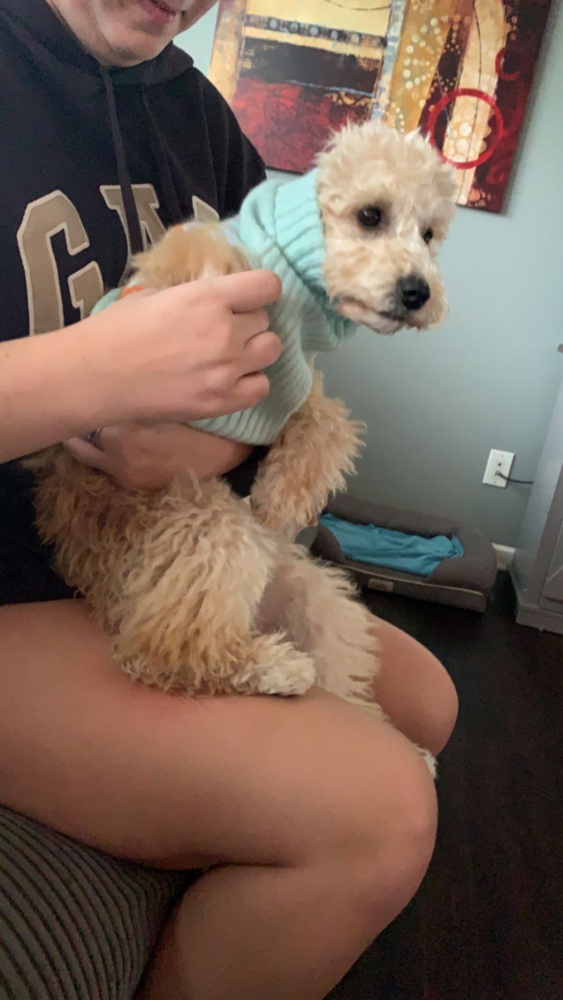
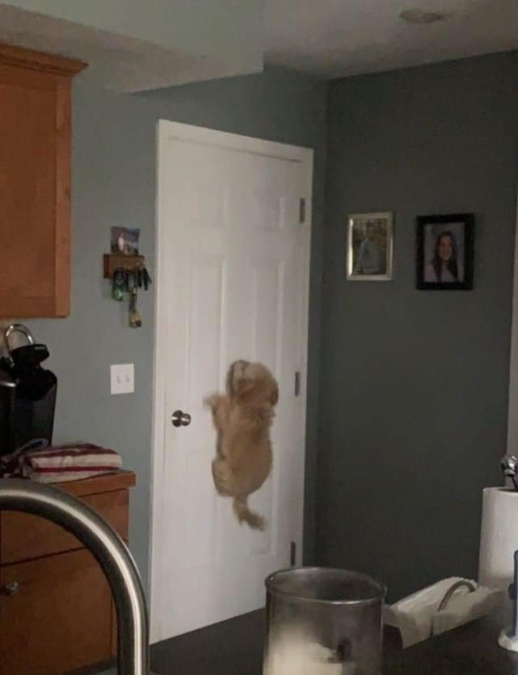
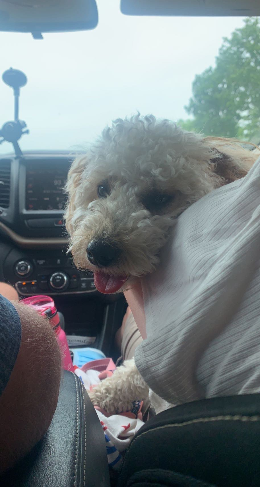
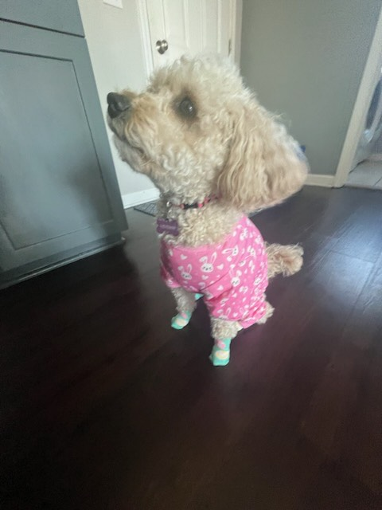

Pets
Bacon Q Dog

Bacon Q. Dog is a 9yr old labradoodle. He prefers to spend his days lounging among the three different beds/couches that his family has gifted him. He enjoys a walk or two around the neighborhood, as long as he can pretend that he doesn't see any of the other animals to avoid the embarrassment of not wanting to admit he has no wolf-like skills in chasing them.
At night just as the rest of the family is ready to relax, Bacon suddenly wants to release all of his energy. He will place his toys on a mini couch and frantically drag the couch around, giving his toys "a ride." There is also a lot of rolling. Lots and lots of rolling.
Photo Gallery


Likes
- Belly rubs
- Playing tug-of-war
- Sneaking onto the couch
Quinn
Introducing Quinn, the lively 2-year-old golden doodle with a heart full of boundless energy! Quinn's fur shines like spun gold, and her playful spirit is infectious. Whether she's chasing after a favorite squeaky toy or frolicking in the great outdoors, Quinn's zest for life is truly unmatched.
Quinn is not just a furry friend; she's a social butterfly who loves making new pals at the dog park. Her wagging tail and friendly demeanor make her a beloved member of the canine community.
Photo Gallery
  Nicknames
- Quinny Bear
- Quinnward
- John Quincy Adams
Quinn
Meet Bailey, the wise and wonderful senior Miniature Pinscher who brings a calm and comforting presence to her household. At her age, Bailey has perfected the art of relaxation and can often be found gracefully lounging around the house, taking in the serenity of her surroundings.
One of Bailey's greatest joys is basking in the warm embrace of the sun. You'll frequently find her seeking out the sunniest spots in the house, where she can soak up the rays and enjoy the gentle warmth on her fur. It's as if the sunshine itself brings out the best in this delightful Miniature Pinscher.
Photo Gallery
Nicknames
- Quinny Bear
- Quinnward
- John Quincy Adams